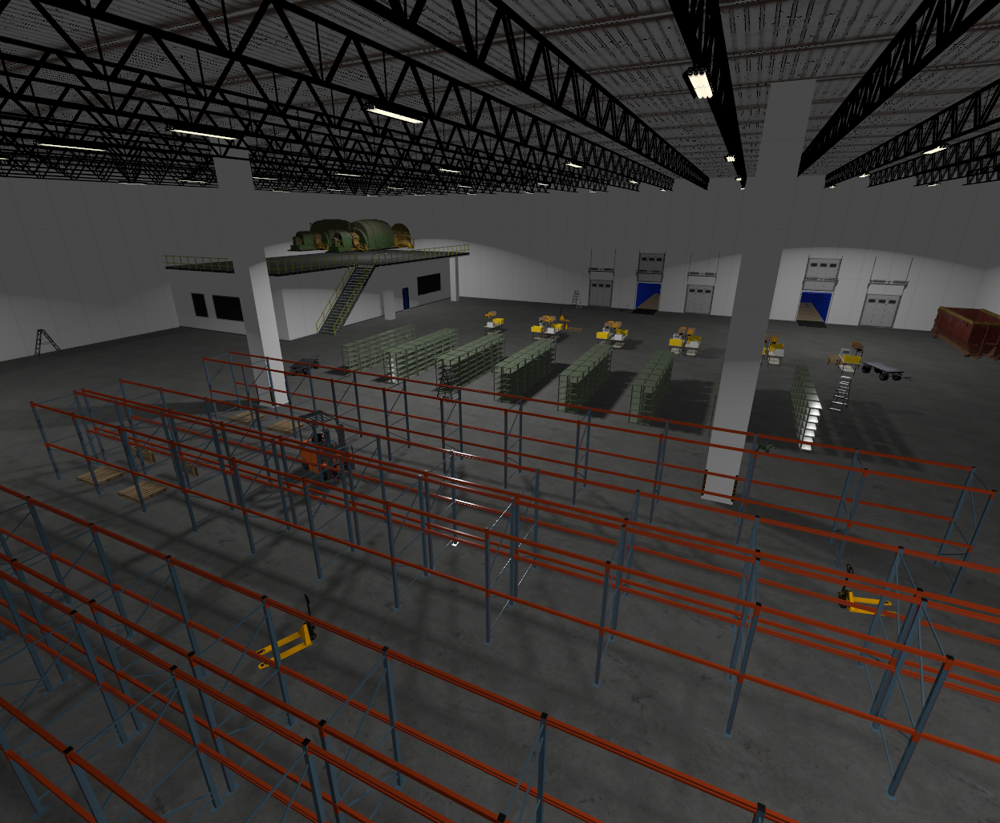
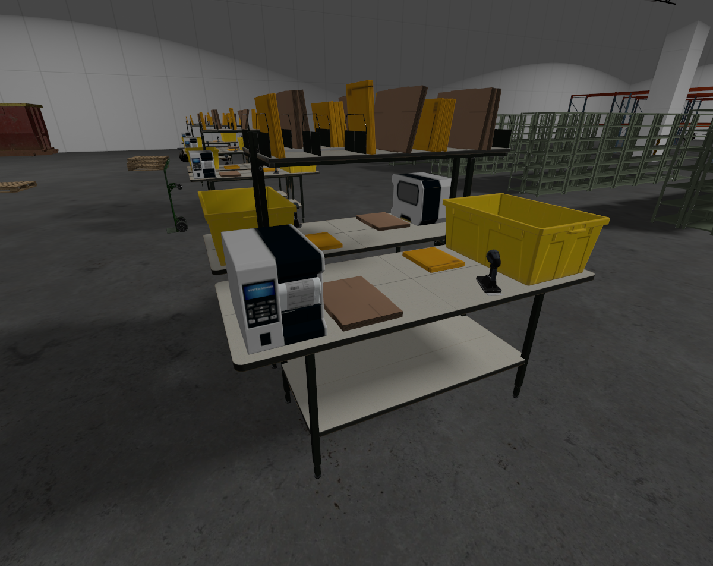
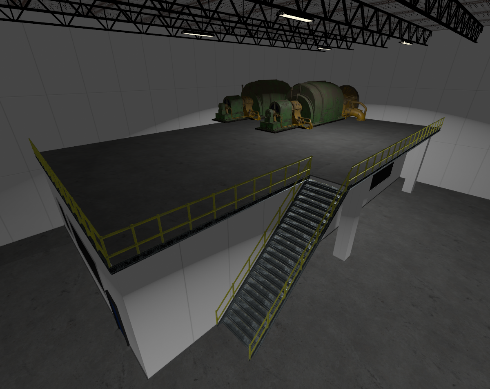

Release Notes#
The Gazebo team is happy to announce the 10th major release of Gazebo, code named Jetty! Jetty is a long term support (LTS) release, meaning it has a longer support lifetime, September 2030 to be exact.
Highlights#
Here’s a brief summary of all the new features in Gazebo Jetty:
A new Jetty Demo World#
We created a realistic warehouse environment designed to highlight the latest Jetty features. This free, downloadable demo includes shelving and an autonomous forklift for loading and unloading. As an added bonus, it also features an Open-RMF demonstration.



Zenoh transport support, working towards improved ROS integration#
Up until Ionic, Gazebo used ZeroMQ (0MQ) as its primary message transport
protocol. Gazebo now supports Zenoh as an alternative
transport implementation, offering improved discovery, interoperability, and
performance. To enable Zenoh, set the environment variable
`export GZ_TRANSPORT_IMPLEMENTATION=zenoh`. This allows Gazebo to leverage
Zenoh’s features and potentially integrate more seamlessly with ROS 2 Jazzy and
other systems utilizing Zenoh.
New reinforcement learning demo code and tutorials#
Based on community feedback we’ve added a full tutorial on performing reinforcement learning using Gazebo Jetty and the Stable Baselines3 Python library. These tutorials walk you through using reinforcement learning to build a controller for an inverted pole mounted on a robot cart. StableBaselines3 is just the beginning, and more advanced developers can use the tutorial as a starting point for integrating other reinforcement learning frameworks into Gazebo.
Demo of a classic cartpole trained to balance itself#
ROS Standard Sim Interface#
Members of the ROS community have built a standard simulation interface to improve the portability of robot code between simulators. This new standard interface should allow ROS developers to quickly and easily switch between simulators based on their development needs.
Simple demo showing conveyor belt based test setup using Simulation Interfaces#
New occupancy grid export functionality#
Occupancy grids are simple 2D maps that robots use for path planning. Open
source navigation frameworks
like Nav2 use
these maps to guide robots safely to their destination. You can now easily
export these occupancy grid maps from Gazebo using the /scan_image topic and
running the following command:
gz topic -t /start_exploration -m gz.msgs.Boolean -p 'data: true'
New occupancy grid export functionality#
New auto-inertia calculation makes adding objects easier#
Previously, the inertial/@auto attribute in SDFormat required you to specify
an object’s density to automatically compute its inertial properties. Now you
can specify an object’s mass in SDFormat and Gazebo will automatically compute
its density and inertial parameters!
From left to right: drills using default, auto, manually computed inertias#
A new and improved Qt6 interface!#
Qt is the cross-platform GUI subsystem used by Gazebo and we recently upgraded to the latest version, Qt6. Qt version 5 went end of life on May 26th, 2025 forcing us to upgrade to version 6. This upgrade was no small feat, as it required updating hundreds of files across the Gazebo project. _Gazebo plugin developers will need to update their Gazebo GUI plugins to QT6 to maintain compatibility. We’ve created a Gazebo plugin QT migration guide to help developers update their plugins.
Things might look slightly different in Qt6#
Dynamically adjust wheel slip / friction#
We’ve added a new LookupWheelSlip system to gz-sim that uses an 8bit RGB lookup map to dynamically change a materials friction parameters. This new feature allows users to map specific colors in a texture image to specific friction values. Want to add an oil slick to the floor of your simulation? Simply draw the oil patch on the texture image and set the desired friction value!

Dynamically adjust wheel slip / friction#
New Gazebo standalone executables#
We’ve modified how the `gz` tool works to make debugging your application easier and to improve cross-platform support for Windows and MacOS. To do this we’ve moved away from the Ruby-based CLI loading libraries back to loading standalone applications.
Better downloading of simulation models and faster start times#
We’ve changed how Gazebo downloads models from Fuel, our online model repository. Models now download in parallel and in the background, making Gazebo simulations start faster and download assets more efficiently.
Refactored package names to remove major versions#
Including major versions in package names was done to allow side-by-side installation of two different Gazebo versions. While helpful for some users, this approach caused major headaches for developers who had to regularly update these version numbers. We’ve ended the practice to make Gazebo simpler to maintain and easier to use for package developers.
Bazel Module Migration#
We have migrated gz packages from the legacy Bazel workspace-based setup to
the new Bazel module system (Bzlmod). As part of this effort, key third-party
dependencies including DARTSim, Bullet, FreeImage, Assimp and more were packaged
and published to the Bazel Central Registry (BCR). All Jetty and Ionic versions
of the libraries have been uploaded to BCR.
Demo showing Bazel based client program using gz-transport#
Contributors and Supporters#
We’d like to give a special thanks to the community members who helped us make this Gazebo release happen by reviewing tutorials during our Jetty Test and Tutorial Party. The results from our Jetty Test and Tutorial Party were quite impressive and we were so happy to see so many new contributors! Our tutorial party went incredibly well! We had 25 participants help us with testing the Jetty release which allowed us to:
Close 388 Issues, 68% of our total issues
Close 148 out of 148 Ubuntu tickets (100%)
Close 65 out of 83 MacOS tickets (44%)
Close 47 out of 147 Windows tickets (32%)
Close 128 out of 128 all platform tickets (100%)
Create 74 PRs fixing the issues that were found!
Our top twenty contributors to the T&T Party are:
Place |
User |
Points |
|---|---|---|
1 |
|
719.2 |
2 |
|
410.6 |
3 |
|
310.0 |
4 |
|
273.6 |
5 |
|
269.0 |
6 |
|
234.0 |
7 |
|
187.2 |
8 |
|
165.6 |
9 |
|
114.0 |
10 |
|
111.0 |
11 |
|
100.0 |
12 |
|
84.4 |
13 |
|
79.2 |
14 |
|
76.0 |
15 |
|
75.0 |
16 |
|
66.0 |
17 |
|
53.0 |
18 |
|
45.0 |
19 |
|
40.0 |
20 |
|
40.0 |


{kind=link}
{kind=link}
{kind=link}
{kind=link}
{kind=link}
We would also like to thank everyone that contributed to Jetty:
List of Contributors
Aarav Gupta (Amronos)
Aaron Chong (aaronchongth)
Abhiroop (akky20)
Addisu Z. Taddese (azeey)
Afereti Pama (retinfai)
Alejandro Hernández Cordero (ahcorde)
Alessandro Sofia (alesof)
Alex Faxå (faximan)
Alexis Tsogias (Zyrin)
Alon Nusem (4lon)
amaldev (AmalDevHaridevan)
Ansh Chablani (anshium)
Antoine Van Malleghem (avanmalleghem)
Arjo Chakravarty (arjo129)
Benjamin Perseghetti (bperseghetti)
bill (bill997)
Carlos Agüero (caguero)
chcaya (chcaya)
ChenYing Kuo (CY) (evshary)
Ching-Hsiang Wu (TigerWuu)
Chris (PimpMyPizza)
Clara Berendsen (claraberendsen)
Cristóbal Arroyo (Crola1702)
Daisuke Nishimatsu (wep21)
David Dorf (david-dorf)
David Morilla Cabello (dvdmc)
Dheeraj Deevi (dheerubhai-101)
Dyst-0 (Dyst-0)
efferre79 (efferre79)
Emmanuel M (EmmanuelMess)
erling (erlingrj)
Ethan Holter (ethanholter)
Fabrice Larribe (teyssieuman)
Federico Vichachi (Federico-Vichachi)
FmJarecki (FmJarecki)
Gabriel Augusto (gabrielaugz)
Gabriel Pacheco (gabrielfpacheco)
Gaurav Kumar (GauravKumar9920)
Gilbert Tanner (TannerGilbert)
Gopikrishnan K (SuperGops7)
Griffin Tabor (gftabor)
Guilhem Saurel (nim65s)
Gwenn Le Bihan (gwennlbh)
Harrison Chen (chen-harrison)
Ian Chen (iche033)
Ignacio Vizzo (nachovizzo)
Jasper van Brakel (SuperJappie08)
Jenn Nguyen (jennuine)
Jeremy Nimmer (jwnimmer-tri)
jmackay2 (jmackay2)
Jorge J. Perez (Blast545)
Jose Luis Rivero (j-rivero)
Josh Newans (joshnewans)
Joshua J. Damanik (damanikjosh)
Júlia Marsal Perendreu (roboticswithjulia)
Kai Pastor (dg0yt)
Khaled Gabr (khaledgabr77)
Kostubh Khandelwal (exMachina316)
Leander Stephen D’Souza (leander-dsouza)
Leo Lin (LeoLin6)
Luca Della Vedova (luca-della-vedova)
Maksim Derbasov (ntfshard)
Marcel Jacobse (mjacobse)
Martin Pecka (peci1)
Michael Carlstrom (InvincibleRMC)
Michael Carroll (mjcarroll)
Mohamed Hassan (mohamedsayed18)
mosfet80 (mosfet80)
muttistefano (muttistefano)
Nate Koenig (nkoenig)
Nathan Rogers (torn8to)
Nguyễn Tấn Anh Khoa (kitare17)
Nikodem (nikodemj9)
Nizam Gifary (ngifary)
Noa Thouard (Noa-Thouard-Nexxis)
Oscmoar07 (XINJIANGMO)
Patrick Roncagliolo (roncapat)
Pravin Dangol (Pravin-Dangol)
Qingyou Zhao (qingyouzhao)
Rahul K.A (Rahul-K-A)
Ramir Sultanov (sumir0)
Rhys Mainwaring (srmainwaring)
Rnishu (Rnishu)
Rômulo Cerqueira (romulogcerqueira)
Sai Aravind (saiaravind19)
Saurabh Kamat (sauk2)
Shady Gmira (shadygm)
Shameek Ganguly (shameekganguly)
Shashank (shashank1300)
Shyam Ganatra (ganatrask)
Sikiru O. Salau (siksal)
Silvio Traversaro (traversaro)
Steve Peters (scpeters)
Tatsuro Sakaguchi (Tacha-S)
Trushant Adeshara (trushant05)
Udaya Prakash (udaya2899)
Utkarsh Yenurkar (BA-Utkarsh)
Vasily Kiniv (v-kiniv)
Vedant Randive (Vedant87)
VM (Vicky) Brasseur (vmbrasseur)
WangWeiLin-MV (WangWeiLin-MV)
Wiktor Bajor (Wiktor-99)
Xiaochuan Ye (XueSongTap)
Yaswanth (yaswanth1701)
Øystein Sture (oysstu)